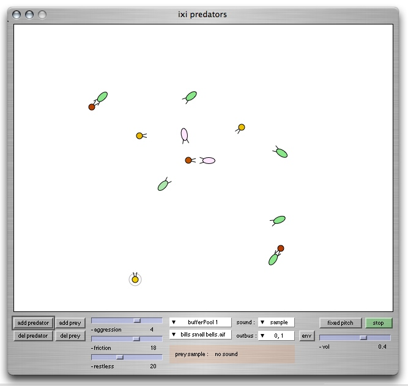

ixiQuarks : Predators

| Predators |
The Predators is an artificial life (ALife) instrument
where predators and preys are left to interact in a neutral environment.
The idea behind the instrument was to create a non-linear note or sample
player; one that was controlled by the properties of an ALife system rather
than random number generators. There are various synths available from a popup menu, but most noteable are the scode synth where the user can live-code synths in realtime and the audiostream where you can stream in audio from any running bus and have the predators triggering those sounds. Fixed Pitch/Relative Pitch means that each prey has a frequency that is either fixed (and you can define which frequency it has) or relative to it's vertical location. |